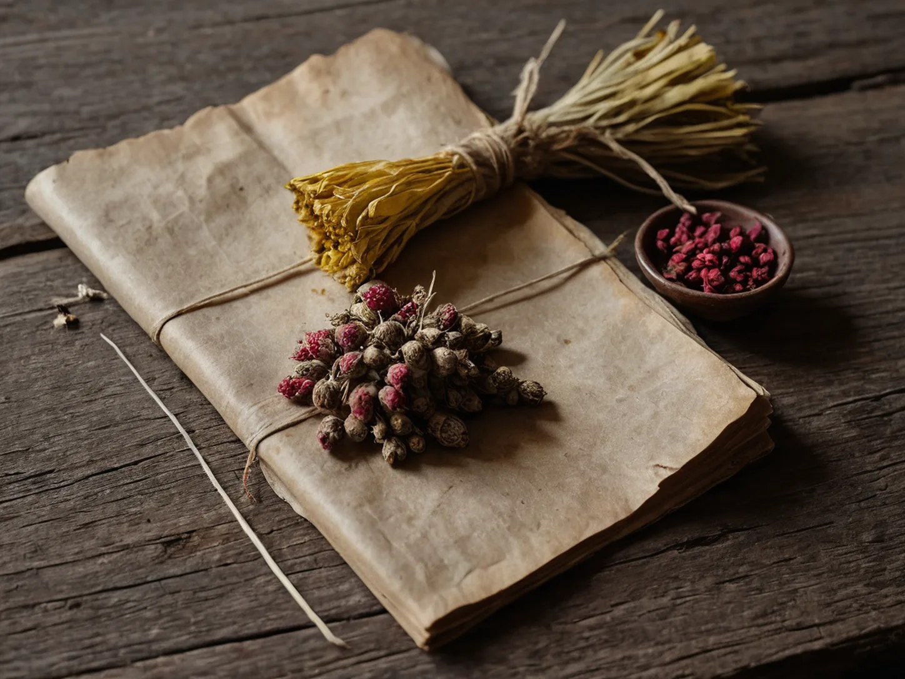

Ginseng, Ophiopogon, Schisandra: Old Formula Page
Ginseng, ophiopogon, and schisandra sit beside a closed book, where an old formula remains a historical record rather than a present-day instruction.

Three materials beside the book
Ginseng appears in pale, fibrous slices; ophiopogon is smaller and smooth, like a dry bead with a quiet sheen; schisandra holds its color in wrinkled red fruit. On a wooden table, the three can look close to pantry objects, although each also belongs to a different chain of gathering, trade, naming, and use. Their ordinary surfaces make a historic list seem simpler than it is. The difference is easy to miss in a still life, which is why a picture cannot settle the names by itself.
The title Sheng Mai San gathers them into one short phrase. This page keeps the materials apart because common appearance is not identity: botanical sources, processing, storage, and commercial substitutions can differ. Ginseng in the old record is not a loose invitation to exchange it for another root with a familiar market name. The closed book marks the distance between a visible material and a decision beyond the table.
An earlier line in print
The textual history is less tidy than a single label suggests. A three-item record appears in Zhang Yuansu's Yixue Qiyuan, while Li Gao later discussed the combination in Neiwai shang bianhuo lun. Both books belong to a historical language of bodies, seasons, and materials that does not map directly onto present-day categories. Later readers inherited more than one reference for the same short name over time.
Licorice, Wheat, and Jujube on an Old Formula Page also holds a short list beside a closed volume, while Scallion White and Soybeans on an Old Formula Page follows another compact textual witness. Xiangru Drink from an Old Summer Formula stays closer to a neighbor's table, showing how an old written name and a household scene can remain separate records.
Why the page stays closed
A surviving formula does not establish present-day safety or effectiveness. The National Center for Complementary and Integrative Health notes that Chinese herbal products can involve quality concerns, contamination, side effects, and interactions with medicines. A list of three materials cannot show a reader the source, condition, product, or person that an old text once assumed. Product labels do not remove the need for context when other medicines are involved.
For that reason, this record gives no quantities, preparation, or modern use. The ginseng stays in its pale slices, the ophiopogon remains a small dry cluster, and the red fruit stays beside the book. The old line can be read as part of an archive without becoming a household instruction.